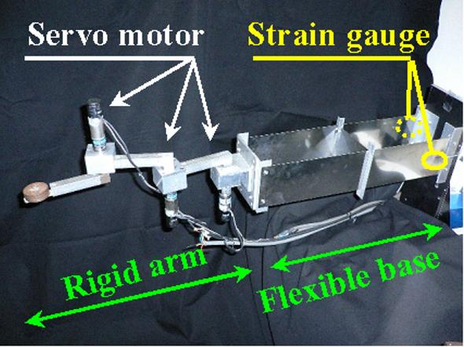
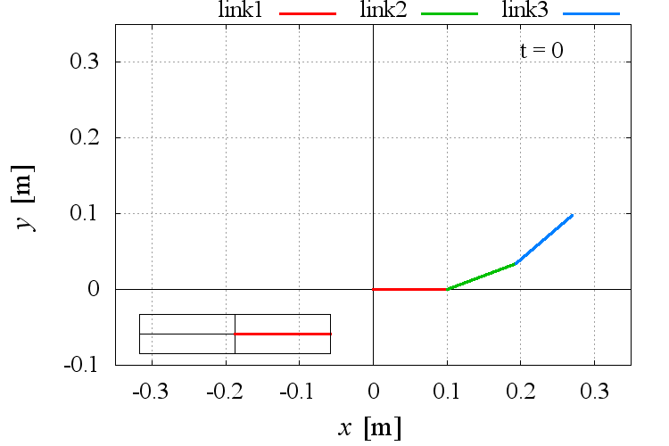
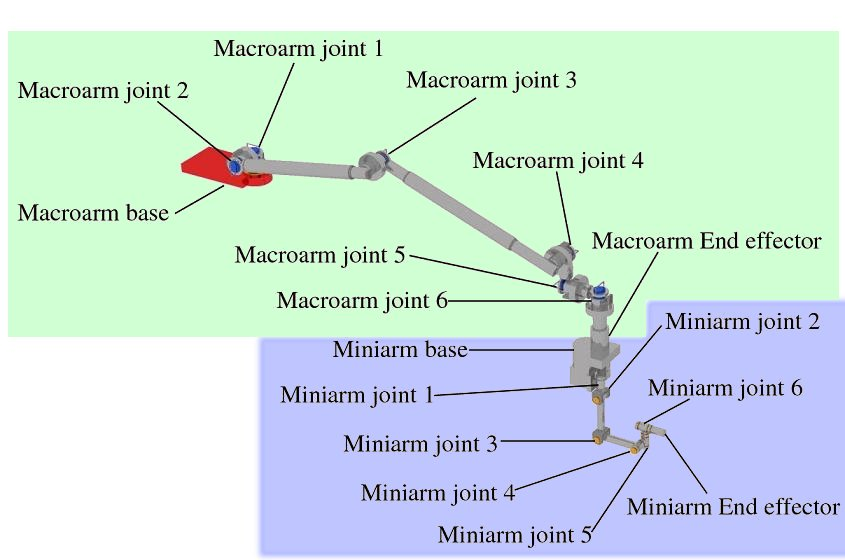

Space Robot Group (2010)
研究背景
スペースシャトル、アトランティスの打ち上げやハッブルの修理、また宇宙飛行士の長期滞在など、
人類は宇宙進出を進めており、国際宇宙ステーション(International Space Station: ISS)を中心に、宇宙空間を利用した研究が多く行われています。
これと同時に、ISSの建設や保守および点検など様々な作業が存在します。
大型のペイロードを移動する場合は、ロボットアームを使用していますが、修繕作業や細かい作業については、宇宙飛行士の船外活動により遂行しています。 しかし、宇宙における作業は、スペースデブリとの衝突や宇宙服の故障、また一度船外活動（6時間)を行うために、準備に24時間かかるなど、多くの危険性や不便性が存在します。 本研究班では、上記のような船外活動を行う宇宙飛行士の代替として、小型のロボットアームを用い遠隔操作する方法を採用し、制御の視点から研究を進めています。
大型のペイロードを移動する場合は、ロボットアームを使用していますが、修繕作業や細かい作業については、宇宙飛行士の船外活動により遂行しています。 しかし、宇宙における作業は、スペースデブリとの衝突や宇宙服の故障、また一度船外活動（6時間)を行うために、準備に24時間かかるなど、多くの危険性や不便性が存在します。 本研究班では、上記のような船外活動を行う宇宙飛行士の代替として、小型のロボットアームを用い遠隔操作する方法を採用し、制御の視点から研究を進めています。
{kind=link}
研究目的
宇宙環境の中で、宇宙飛行士がロボットアームの遠隔操作を行う場合、様々な問題が発生します。
宇宙マニピュレータは、いくつものモータが連鎖して取り付けられている構造となっています。
下の写真は、日本実験棟（Japanese Experiment Module: JEM）とそれに取り付けられた日本の宇宙マニピュレータ（JEM Remote Manipulator System: JEMRMS）です。
この様な宇宙マニピュレータ（以下マニピュレータ）を遠隔操作する場合、二つの問題が存在します。一つは振動問題、二つ目は、特異点問題です。
振動問題：
原因は、マニピュレータの関節に存在する遊び(バックラッシュ)や梁のたわみなどです。 地球上では、空気抵抗や重力による摩擦が存在するため、エネルギが消費されますが、宇宙空間においてはマニピュレータを遠隔操作を行った際の反力が、生じてエネルギーとして残こます。 さらに、関節の遊びによりこのエネルギが振動となって長い間現れます。
特異点問題：
これは、ロボット工学の問題です。マニピュレータを遠隔操作する場合、制御法によっては数字が発散（ゼロで割る）してします場合が存在します。 これが特異点問題です。この問題は、マニピュレータが特定の姿勢（例えば、伸ばし切った状態）になった場合に発生します。
上記二つの問題は、過去に多くの研究が進められ解決されてきました。 我々はこの二つの問題を「同時に」解決可能な制御手法について主に研究を進めています。
原因は、マニピュレータの関節に存在する遊び(バックラッシュ)や梁のたわみなどです。 地球上では、空気抵抗や重力による摩擦が存在するため、エネルギが消費されますが、宇宙空間においてはマニピュレータを遠隔操作を行った際の反力が、生じてエネルギーとして残こます。 さらに、関節の遊びによりこのエネルギが振動となって長い間現れます。
これは、ロボット工学の問題です。マニピュレータを遠隔操作する場合、制御法によっては数字が発散（ゼロで割る）してします場合が存在します。 これが特異点問題です。この問題は、マニピュレータが特定の姿勢（例えば、伸ばし切った状態）になった場合に発生します。
上記二つの問題は、過去に多くの研究が進められ解決されてきました。 我々はこの二つの問題を「同時に」解決可能な制御手法について主に研究を進めています。
{kind=link}
研究内容
JRMRMS（上から３番目の写真）は、緑枠のロボットアーム（親アーム）と青紫枠の小型ロボットアーム（子アーム）の
二つのマニピュレータにより構成されています。この様なシステムを「マクロミニマニピュレータシステム」と呼びます。
「研究目的」で示した問題は、この様なマクロミニマニピュレータシステムを遠隔操作する際に発生します。
このシステムを地球上で研究する場合、空気抵抗、重力の影響を無視できません。
我々は、上記の内で主な影響である重力を考慮した実験機として、過去に二次元平面における柔軟ベース上マニピュレータを構築しました（１番目の写真） 。
これを用い、無反動制御法・特異点適合法(SC法)・振動抑制制御法など、多くの制御手法を提案および検証を行ってきました。
さらに、JEMRMSの動力学シミュレータを構築し、宇宙を模擬した環境下で上記の制御手法の有効性について研究を続けています。

{kind=link}
過去に、柔軟ベース上単腕3リンク冗長マニピュレータを用いて研究を行っています。
この実験機に対して無反動制御法・特異点適合法(SC法)・振動抑制制御法などを適用し、制御則の有効性について研究が進められてきました。

{kind=link}
現在は、MaTX（リンク先）を用い、上記の実験機をモデルとした動力学シミュレータを構築し、
トルク制御下での有効性について研究を進めています。左図は、マニピュレータ先端制御を行った時の動作を、gnuplotを用いてアニメーション表示させたものです。

{kind=link}
これまで提案してきた様々な制御手法を、三次元に拡張可能であるか検証を進めています。
左図は、先にも述べたJEMRMSをモデルとしたシミュレータです。
また、遠隔操作を含めた3Dグラフィックスでの表示についても構築を進めています。
（以下の関連動画参照してください。）
関連動画
マニピュレータが動作していない状態で柔軟ベース上に力を加えることにより、外部入力による柔軟ベース部振動の様子を示しています。
これより、柔軟ベース部が宇宙マニピュレータでのマクロマニ ピュレータに相当するモデルであることがわかります。